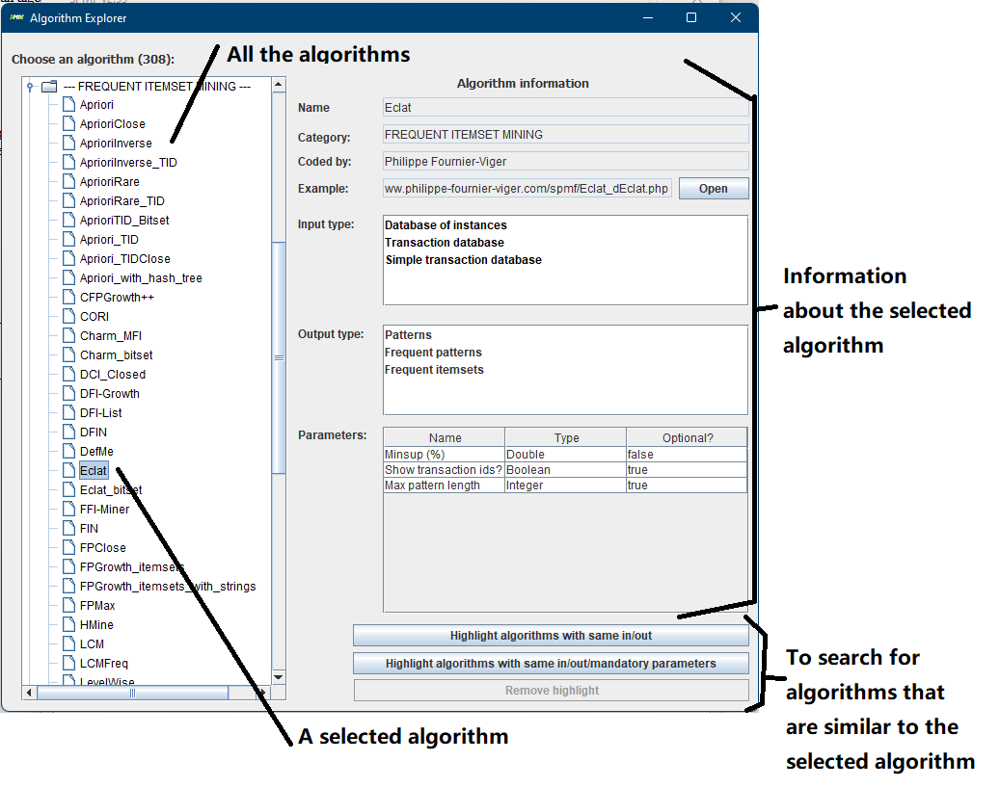
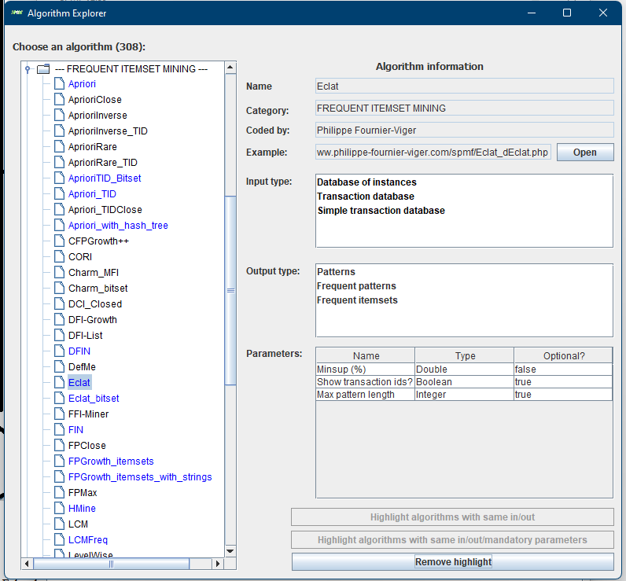

Open the Algorithm Explorer to view informations about algorithms (SPMF documentation)
This example explains how to open a text file using the SPMF text editor .
How to run this example?
- If you are using the graphical interface of SPMF, (1) choose the "Algorithm_Explorer" algorithm, and then (2) click "Run algorithm".
- If you want to execute this example from the command
line, then execute this command:
java -jar spmf.jar run Algorithm_Explorer
in a folder containing spmf.jar
What is this tool?
The SPMF Algorithm Explorer is a graphical user interface that let you explore the library of algorithms offered in SPMF.
On the left side of the user interface of the algorithm explorer, all the algorithms are categorized in different categories.
When clicking on an algorithm, some detailed information are displayed on the right side such as the (1) name, (2) category, (3) person who coded the algorithm, (4) the documentation webpage, (5) the input type and output types and (6) the parameters that are required or optional.
Here is a picture of the Algorithm Explorer tool:

Note also that the tool offers some functions in the lower right corner to search for similar algorithms. For example, if we select the Eclat algorithm, we can then click on the button "Highlight algorithms with same in/out" to find all algorithms that have the same input and output parameters. This can be useful to find quickly the most similar algorithms. This is the result:

In that picture all the algorithms with the same input and output as Eclat are highlighted in blue color. To remove the highlight, you can click on the button "Remove highlight".